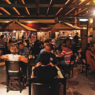

O que eu mais gosto em São Paulo
Passear na Avenidada Paulista!
 Um dos principais centros financeiros da cidade, a avenida Paulista também possui diversas opções de entretenimento. Endereço do Musde Arte de São Paulo, MASP, do Teatro Gazeta e muitos outros, a região é de fácil acesso graças as diversas linhas de ônibus que
cruzam a avenida e a linha de metrô que passa por baixo dela.
Um dos principais centros financeiros da cidade, a avenida Paulista também possui diversas opções de entretenimento. Endereço do Musde Arte de São Paulo, MASP, do Teatro Gazeta e muitos outros, a região é de fácil acesso graças as diversas linhas de ônibus que
cruzam a avenida e a linha de metrô que passa por baixo dela.
A Avenida Paulista sempre é assunto. O que será que estão falando a respeito no Twitter?
Os bares da Vila Madalena
Depois de um dia de trabalho, nada melhor do que um bom chopp, um petisco e uma conversa em uma mesa de bar. Opções de sobra na região das ruas Aspicuelta, Fradique Coutinho e Wisard.
Veja quais os melhores bares e restaurantes da região no Guia da Veja São Paulo.
O Parque do Ibirapuera

Um dos cartões postais da cidade, o parque dispõe de mais de 1,5 km{^2} de área verde, lagos artificiais e pistas de cooper e ciclismo. E se isso não fosse o suficiente, o parque costuma ser palco de diversos eventos culturais ao longo do ano.
Veja mo mapa como chegar no parque.
E Existem muito outros Lugares interessantes na cidade..
- O Mercado Municipal.
- A Sala São Paulo.
- Os Estágios do principais times de futebol
- Diversos museus, como o Memorial da América Latina, Museu da Língua Portuguesa e o Museu do Ipiranga.
- E mais!
Parte do Livro "HTML5 e CSS3: Domine a web futuro."